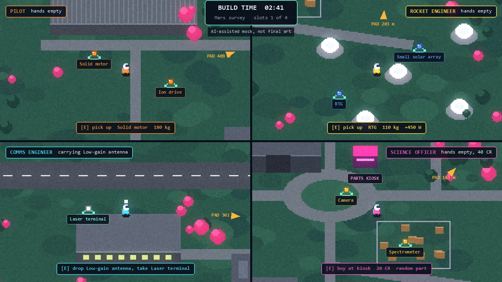
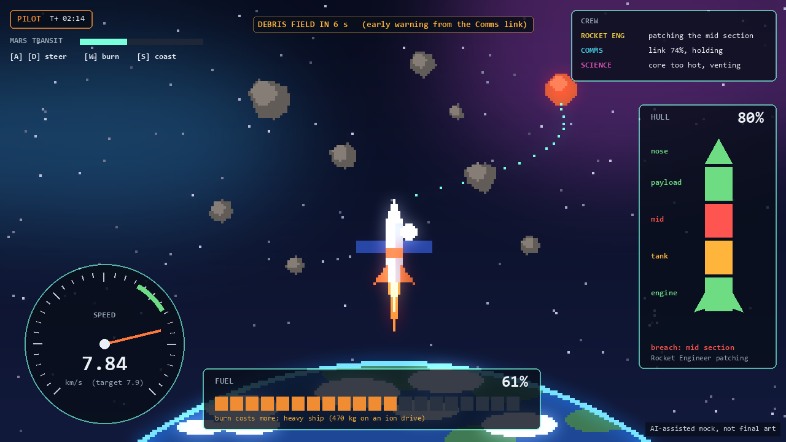
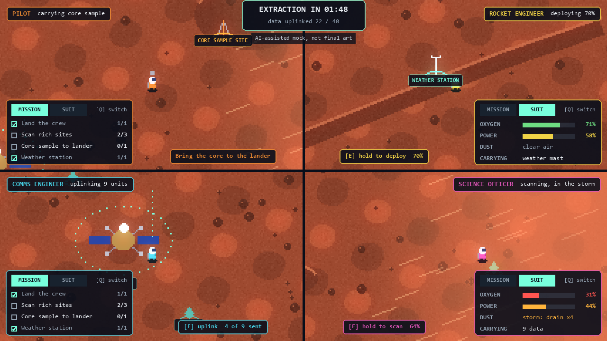
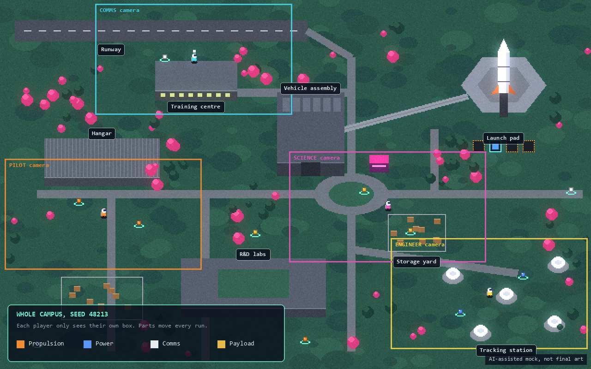
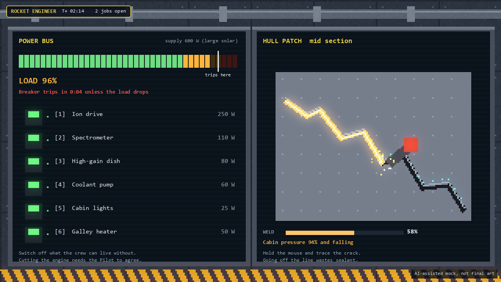
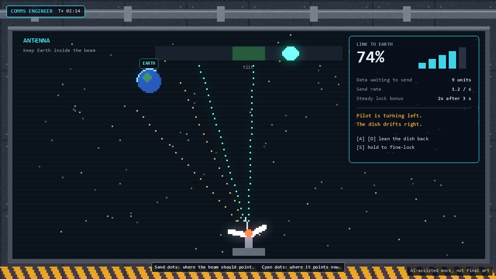
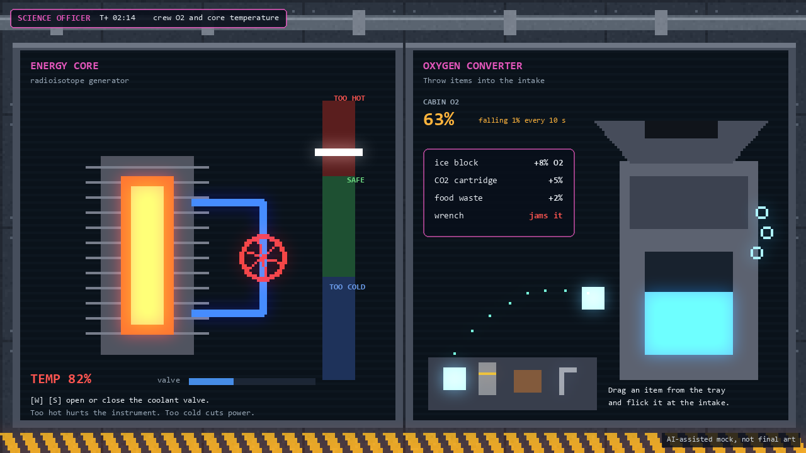
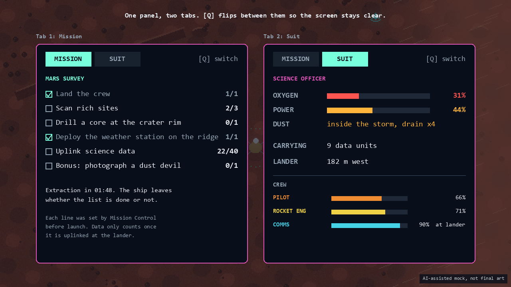
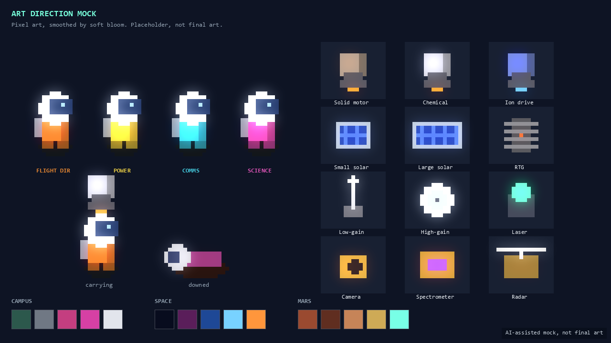

1. Explore and buildSearch a big campus for rocket parts, or gamble credits at the kiosk. Every part changes mass, power, data, comms and cost.
2. Travel and maintainPilot, Rocket Engineer, Comms Engineer and Science Officer each play their own minigame. The parts you mounted decide how hard each one is.
3. Sortie and homesteadSplit up on the surface and work through Mission Control's list before extraction. Dust storms and solar flares punish anyone who strays too far.The challenge asks for a game where players design a whole mission, run into real constraints, and learn why the mission worked or failed. Our three phases map onto that. The build phase is the design, the flight and the surface are where the design gets tested, and the report closes the loop by explaining the result.
The rule we hold ourselves to: every part the crew mounts has to change something later in the run. If a choice on the campus does not show up in the flight or on the surface, it is decoration and we cut it.
Space Apps scores every project from 1 to 5 on these five criteria, taken from the 2026 Judging and Awards Guide.
| Criterion | What it rewards | Where Homestead earns it |
|---|---|---|
| Impact | A real problem, and how many people it helps or inspires | Students rarely get to try a whole mission end to end. Homestead lets a group with no space background do it in ten minutes. |
| Creativity | An original idea or a meaningful improvement on existing ones | Most mission design tools are spreadsheets. Here you scavenge the parts under a timer and then live with them as a crew. |
| Validity | Grounded in science, feasible, usable | Every part is based on real hardware, and the trade-offs between them follow real physics: heavier means more fuel, a bigger antenna costs power. |
| Relevance | Answers the challenge directly, with NASA data at the core | Mission cards, part stats and planet hazards come from NASA sources listed in section 09. The report names the real mission that made the same trade. |
| Presentation | Clear, well told story in the demo and project page | The 30-second video shows one choice, its consequence and the report naming it. The title gives judges a reason to click. |
| The brief asks for | Where it is in the game |
|---|---|
| Define a mission objective first | Each run opens on a mission card from Mission Control: destination, objectives, data required, credits. |
| Trade off mass, power, budget, data, communications and time | Six meters on the launch pad. Each one comes back later in the flight or on the surface. |
| Every decision has a consequence | A heavy rocket burns more fuel, a weak power source trips breakers, a slow antenna leaves data stuck on the surface. |
| No single perfect solution, random events | Parts spawn somewhere new each run, so the crew designs around what it found. |
| Solo or teams of up to four with different roles | Four roles with their own screens. A solo player switches between them. |
| Explain why a mission succeeded or failed | The mission report traces each outcome back to the part that caused it. |
These come from the 2026 Project Submission Guide and the Judging and Awards Guide, both published 13 November. Breaking the first one makes the project ineligible for global judging, so it is first on the list.
| Rule | What we do |
|---|---|
| The demo is a video of 30 seconds or less, or at most 7 slides. Going over makes us ineligible for global judging. | A video cut to 28 seconds, following the guide's outline: team and challenge, title and tagline, how it works, what it could become. |
| Everything is in English. A video in another language needs English subtitles. | English voice-over with burned-in English subtitles. |
| Videos and files are hosted elsewhere, on a public link that needs no login. | Video on YouTube (unlisted), build and code on a public GitHub repo. Both links tested in a private browser window before we submit. |
| At least one NASA data source or resource, needed for a global award. The Relevance score rewards NASA data that is central to the project. | NASA facts drive the mission cards, part stats and hazards. Full list in section 09, copied into the project page's NASA Data field. |
| AI tools are allowed, but not for coming up with the idea. AI-made images and video need a visible watermark. AI-written code and data must be noted in text and metadata. | The concept is our team's. AI helped review scope, draw mocks and write code. Every AI-made image and the video carry a watermark, and the README has a section saying where AI was used. |
| AI-generated content may not contain NASA logos, flags or mission identifiers. | No NASA logos, flags or mission patches in any art. Real mission names appear only as plain text in the report. |
| List every outside resource, even free ones. No copyrighted material without permission. | The game screenshots we used as style references stay out of the build, video and repo. Fonts and sounds come from free licences and are listed. |
| At most six members, all registered at the same Local Event. | Everyone checks their registration tonight. |
| No images, video or voices of anyone under 18. | Checked before the video is recorded. |
| Press "Submit for Judging" before 11:59 PM local time on 15 November, after ticking the terms and original-work boxes. | Seat 6 submits at hour 12.5 of the build, with the rest as buffer. We can resubmit until the deadline. |
| Mission | On the mission card | In the game | Builds that do well |
|---|---|---|---|
| Lunar survey | About 3 days away. Radio delay about 1.3 seconds. Gravity one sixth of Earth's. | Short flight with few events. Fewer credits, less data needed. | Light and simple, launched early. |
| Mars survey | About 7 months away. Radio delay 3 to 22 minutes. Sunlight about 43% of Earth's. | Long flight with many events. Solar arrays lose power. More data needed. | Spare power and a strong antenna. |
| Meter | On the campus | In flight | On the surface |
|---|---|---|---|
| Mass | Total of mounted parts, against what the engine can lift | Over the limit, the launch fails. Near it, the ship turns slowly and burns more fuel. | |
| Power | Supply against what the other parts draw | Little spare power means the breaker keeps tripping | How fast suits recharge at the lander |
| Budget | Mission credits, spent only at the kiosk | Unspent credits add to the score | |
| Data | What the payload collects per reading | An overheated core damages the instrument | Readings taken at sites and carried back |
| Comms | How fast the antenna sends data | A held link warns the pilot of debris early | How fast data uploads at the lander |
| Time | The build timer. Launching early scores. | Transit length, from engine and destination | The surface timer before extraction |
Crew oxygen sits alongside these: the Science Officer keeps it up in flight, and each suit has its own supply on the surface.
One seed decides the mission, where each part spawns, what the kiosk hands out, and which events hit the flight and the surface. The host sends the seed to everyone so all four screens agree. Losing the hull, running out of fuel or losing the whole crew ends the run on the spot, and nothing carries over to the next one. Sharing a seed lets two teams race the same problem.
The campus is several screens wide and each player's camera follows only them, so the crew has to split up to cover it. Astronauts are small against the map on purpose. Everyone finds different parts, and what you find decides what you can build.

The numbers are a first pass for balancing and live in one data file. The last column is the real hardware each part is based on, which the report can name.
| Part | Mass | Power | In flight | On the surface | Based on |
|---|---|---|---|---|---|
| Propulsion, mounted by the Pilot | |||||
| Solid motor | 180 | -10 W | Lifts 600 kg. Steers in fixed pulses. | Fuel left scores | Solid rocket boosters (Space Shuttle, SLS) |
| Chemical engine | 300 | -30 W | Lifts 900 kg. Responsive, thirsty. | Fuel left scores | RL10 upper-stage engine |
| Ion drive | 120 | -250 W | Lifts 500 kg. Slow, sips fuel. | Fuel left scores | Ion propulsion on Dawn |
| Power, mounted by the Rocket Engineer | |||||
| Small solar array | 60 | +300 W | Drops in solar flares | Slow suit recharge, weak at Mars | InSight lander arrays |
| Large solar array | 150 | +600 W | Plenty of power, bigger debris target | Fast recharge, weak at Mars | Juno's arrays |
| Radioisotope generator | 110 | +450 W | Steady, ignores flares, runs hot | Steady anywhere | MMRTG on Curiosity and Perseverance |
| Comms, mounted by the Comms Engineer | |||||
| Low-gain antenna | 15 | -20 W | Hardly drifts, short warning | Slow upload | Rover low-gain antennas |
| High-gain dish | 70 | -80 W | Drifts when the pilot turns | Fast upload | Mars Reconnaissance Orbiter's 3 m dish |
| Laser terminal | 40 | -120 W | Hardest to keep on target | Fastest upload | Deep Space Optical Comms on Psyche |
| Payload, mounted by the Science Officer | |||||
| Camera | 30 | -40 W | Barely heats the core | Quick scans, little data | HiRISE on Mars Reconnaissance Orbiter |
| Spectrometer | 80 | -110 W | Needs cooling | Medium scans, good data | SuperCam on Perseverance |
| Radar sounder | 160 | -200 W | Overheats fast | Slow scans, most data | SHARAD on Mars Reconnaissance Orbiter |
Once the rocket launches, each player gets their own screen and their own problem. Nobody can fix someone else's station, and every station leans on another one, so the crew has to talk. The parts mounted on the campus set how hard each minigame is.
Steers through debris and keeps speed near the transfer target without wasting fuel. The engine and total mass decide how the ship handles. The Pilot cannot repair anything, so a hit means calling the Rocket Engineer.

Two minigames. The power bus shows the total load against supply, and the Engineer switches loads off before the breaker trips. Switching off the engine needs the Pilot to agree, and switching off the antenna annoys Comms. Hull breaches open a welding job where you trace the crack, and every second off the line wastes sealant. The power part chosen on the campus sets how close to the limit the bus runs.

A balancing game. The dish sits on a pivot and drifts every time the Pilot turns, and the Comms Engineer leans it back so Earth stays inside the beam. Holding a steady lock doubles the send rate. While the link holds, the Pilot gets early warning of debris. A low-gain antenna barely drifts, and a laser terminal is the hardest to hold.

Two jobs. The energy core has to stay in its safe band: too hot and the instrument loses accuracy before landing, too cold and the ship loses power. The oxygen converter keeps the cabin breathable. You flick items from a tray into the intake: ice and CO2 cartridges help, food waste helps a little, and a stray wrench jams it. A radar sounder heats the core much faster than a camera.
| Players | How it works |
|---|---|
| Solo | Host a game with nobody else, cover all four roles and switch stations with Tab. Events come more slowly. This is how most judges will play. |
| 2 or 3 | Roles are split in the lobby, and anyone holding two roles switches between their two stations. |
| 4 | One role each, which is how the game is meant to be played. |
The lander touches down and the crew splits up across a surface map as large as the campus. Each player again sees only their own area. Mission Control's list has to be done before the extraction ship arrives, and it leaves on time whether the list is finished or not.

| Mission | Objectives |
|---|---|
| Mars | Scan 3 rich sites. Drill a core at the crater rim and carry it to the lander. Deploy the weather station on the ridge. Uplink 40 data units. Bonus: photograph a dust devil. |
| Moon | Scan 2 rich sites. Collect a regolith sample from a crater floor. Deploy a seismometer. Uplink 25 data units. Bonus: photograph Earth from the surface. |
| Planet | Hazard | The real thing |
|---|---|---|
| Moon | Solar flare. After a warning, radiation sweeps the open ground. Shelter at the lander or behind rock. | The Moon has no thick atmosphere or global magnetic field, so solar particles reach the surface. |
| Mars | Dust storm. A wall of dust crosses the map, cutting sight and draining suits fast. | A planet-wide dust storm in 2018 cut off power to the Opportunity rover, and the mission ended. |
Every phase writes to one event log: which part went where, every breaker trip, hit, lost link, overheated core and downed player, each tagged with the part that caused it. The report finds the biggest loss and walks it back to a choice the crew made, in plain words.
The score counts data uplinked against the target first, then crew standing at extraction, unspent credits, build time left, and fuel and hull on arrival.
One player presses Host and their machine runs the game. Nothing is deployed and nothing costs money. The host's address becomes a six-character join code that the others type in, like a lobby code. The host keeps the one true copy of the game state: timers, parts, events and scores. Everyone else sends inputs. That keeps four machines from disagreeing.
Some routers, especially on campus and mobile networks, refuse incoming connections. When that happens the crew runs a free virtual LAN app such as Radmin VPN or Tailscale, and the same code works over it. Install one before the demo recording.
Top-down pixel art, smoothed with soft glow and lighting rather than hard retro pixels. The game is finished with placeholder shapes first, and generated art replaces them file for file after the feature freeze. Generated art gets a watermark, as the rules require.

Asset generation skill: npx -y skills add eachlabs/skills --skill game-asset-generation --agent claude-code
The rules need at least one. The Relevance score rewards NASA data that the game actually runs on, so this list goes into the project page's NASA Data field as it stands.
| Resource | What we take from it |
|---|---|
| Beginner's Guide to Aeronautics, rocket parts (NASA Glenn Research Center) www1.grc.nasa.gov/beginners-guide-to-aeronautics/rocket-parts/ | The four part slots and the plain-language description of each part. |
| Moon facts (NASA Science) science.nasa.gov/moon/facts/ | Distance, gravity and radio delay on the Lunar mission card, and the radiation hazard. |
| Mars facts (NASA Science) science.nasa.gov/mars/facts/ | Distance, sunlight, radio delay and dust storms on the Mars mission card. |
| NASA mission pages for Dawn, Juno, InSight, Curiosity, Perseverance, Mars Reconnaissance Orbiter and Psyche | The real hardware behind each part, and the "what real missions do" line in the report. Seat 6 adds the exact links. |
| Design and Develop Science Missions (challenge resource) | The four mission segments. Launch and space segments are the build, operations are the flight and surface, and the user segment is the report. |
| Mission Design Lab and Concept Maturity Levels (challenge resources) | The idea of a trade study, which is how the report explains what was traded for what. |
| CubeSat 101 (challenge resource) | A check on how we describe power, comms and payload to beginners. |
| A Learning Game About Telescopes (challenge resource) | Ending on a real mission that made the same choice as the player. |
| GMAT and NASA Mission Viz (challenge resources) | Reference for transit times only. Neither is built into the game. |
Challenge page: www.spaceappschallenge.org/2026/challenges/space-mission-design-game/. Facts on the mission cards get checked against these pages before we submit.
Six people, each with Claude Code, building a browser game in TypeScript on HTML5 Canvas, bundled with Vite and published on itch.io. With sleep that leaves roughly 12 to 14 working hours. This version is bigger than the first draft, so the cut list at the end matters: when a checkpoint slips, we drop the next item on it instead of running late.
npm install from the lockfile before the first commit.GameState module with the agreed stat and event names. Nobody branches until it lands.package.json, vite.config.ts, the input map and GameState.GameState on the host. Scenes read build stats from it and write events to it, and never reach into another seat's scene.| # | Seat | Owns | Name |
|---|---|---|---|
| 1 | Core and network | Scaffold, host and join by code, lobby and role pick, GameState syncing, seeds, switching between phases, merges. | |
| 2 | Ground and maps | The top-down player, carrying, per-player camera and timers shared by phases 1 and 3. The campus map and part spawns, then the surface map, hazards and extraction. | |
| 3 | Build, missions, report | Parts and mission data files, pad mounting and swapping, six meters, kiosk, launch countdown, salvage fill. Surface objectives and the mission and suit panel. Event log, report, score. | |
| 4 | Pilot and Comms | Pilot view, debris, fuel and hull, event director, the antenna balancing game, solo station switching. | |
| 5 | Engineer and Science | Power bus, hull weld, energy core and oxygen converter minigames. | |
| 6 | Ship it | Rules checklist from section 02, itch.io build tested in a clean browser, README with the AI-use section, art and sound pass, balance runs, newcomer playtest, the video, submission. |
| Hour | Checkpoint | What has to be true |
|---|---|---|
| 1.5 | Scaffold | Repo, Vite scaffold, folders, GameState contract. Two tabs join by code over WebRTC and see each other walk. |
| 6 | Whole loop | One player gets through brief, campus, flight, surface and report with placeholder shapes. Each minigame exists in its simplest form. |
| 8 | Online run, bare UI | Two players on two machines finish a run. All meters and panels readable. |
| 9.5 | Feature freeze, art in | No new mechanics after this. Generated art replaces placeholders. |
| 10.5 | Sound, effects, test | The itch.io build runs in a fresh browser on a machine that never ran the dev server. Someone outside the team plays solo without help. |
| 11.5 | Video | Under 30 seconds: find and mount a part, its consequence in flight or on the surface, the report naming it. |
| 12.5 | Submit | Project page, repo, video, NASA data list, AI-use notes. The time left is buffer. |
The campus build, the six meters and the report are never cut. They are what the challenge scores.
What we need from everyone tonight: a yes or no on this plan, a name on each seat, Node 22 installed and the repo running locally, and a check that all six of us are registered at the same Local Event.